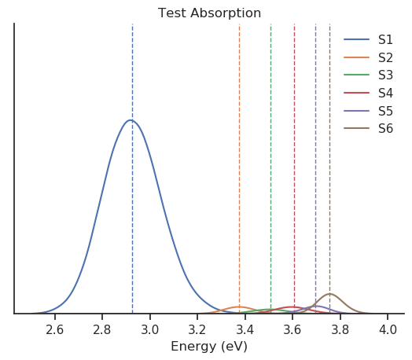

Pynasqm
Table of Contents
1 Installation
PYNASQM requires the following prerequisites -SANDER-NEXMD
- Pytraj
Clone this repository to the directory of your choosing.
git clone https://github.com/PotentialParadox/pynasqm.git cd pynasqm python setup install
2 Pytraj
Pytraj is a python program the wraps around cpptraj, a molecular dynamics analyzer and editor.
I've had a lot of issues using conda or pip to install pytraj. I found it best to build from source. Make sure that you've activated your python environment, then
git clone https://github.com/Amber-MD/pytraj cd pytraj python ./setup.py install
3 Usage
3.1 Capabilities
Pynasqm is currently capable of automating the following actions using NEXMD and SANDER
- Single MM-Ground State Trajectory
- QM-Ground State Trajectories originating from MM-Ground-State
- Absorption calculations using snapshots from the QM-Ground State Trajectories
- QM-Excited State Trajectory
- Non-Adiabatic using the Non-Adiabatic Dyanmics
3.2 Initializing a System
Follow instructions for Creating a QM/MM System for SANDER-NEXMD to create an AMBER parameter/topology (prmtop) file and an AMBER coordinate (inpcrd) file. Create a new directory with any name you'd like. Copy your prmtop and inpcrd file to that directory, renaming the files to
- m1.prmtop (prmtop file)
- m1md2.rst (restart file)
You can initialize the other input files with
nasqm.py --init
which will generate
- pynasqm.in (pynasqm input file)
- input.ceon (The NEXMD input file)
- mdqmmmamb.in (The AMBER input file)
For the documentation for NEXMD, please refer to NEXMD-Git (Contact either Adrian Roitberg (roitberg@ufl.edu) or Sergei Tretiak (serg@lanl.gov) for permission). For the AMBER input file, refer to AMBER-Manual.
The pynasqm input file is written as a commented J-SON file. On lines other than the ones commented out, the file is white space sensitive. Any edits should be performed within the second quoted value on the line. Refer to the comments within the file for guidance on the inputs. Any further question can be referred to Dustin Tracy (dtracy@ufl.edu). systems employing the slurm array feature.
Once your input files are setup, run the program by executing the following in your working directory containing the input files.
nasqm.py
3.3 Plotting an Absorption Spectra
If the setting run_absorption_collection is set to true, then after the
absorption snapshots are finished, pynasqm will output the average excited state
energies and their corresponding oscillator strengths to a file
spectra_abs.in. The format of spectra_abs.in is
| S1-S0 energy | S1-S0 Oscillator Strength | … | Sn-S0 energy | Sn-S0 Oscillator Strength |
This can be converted into a gaussian broadened spectra using
the function hist_spectra_lifetime.py which is installed with the installation
of pynasqm. Most included scripts use the python library argparse and will
output a helper with called with the flag --help. The helper for
hist_spectra_lifetime is as follows:
hist_spectra_lifetime --help usage: hist_spectra_lifetime.py [-h] [--input INPUT] [--output OUTPUT] [--number_states NUMBER_STATES] [--number_gauss NUMBER_GAUSS] [--fwhm FWHM] [--number_bins NUMBER_BINS] [--xmin XMIN] [--xmax XMAX] optional arguments: -h, --help show this help message and exit --input INPUT, -i INPUT The input file --output OUTPUT, -o OUTPUT The output file --number_states NUMBER_STATES The number of excited states you want to extract --number_gauss NUMBER_GAUSS The number of gaussians --fwhm FWHM Full witdh half max of the broadening (eV) --number_bins NUMBER_BINS The number of bins you wish to distribute over --xmin XMIN The minimum energy in eV --xmax XMAX The maximum energy in eV
Our example
hist_spectra_lifetime.py --number_states 9 \ -i spectra_abs.input \ -o spectra_abs.out \ --xmin 1.5 \ --xmax 5 \ --number_bins 1000 \ --number_gauss 100
would produce an output spectra_abs.out containing the spectra information in
a format
| Energy (eV) | Energy (nm) | Absorption S0-S1 | … | Absorption S0-Sn |
We can plot this file using naesmd_spectra_plotter.py
usage: naesmd_spectra_plotter.py [-h] [--title TITLE] [--number_states NUMBER_STATES] [--labels LABELS [LABELS ...]] [--ylabel YLABEL] [--inputfile INPUTFILE] [--outputfile OUTPUTFILE] [--letter LETTER] [--comparison COMPARISON] [--x_units X_UNITS] [--range RANGE [RANGE ...]] optional arguments: -h, --help show this help message and exit --title TITLE The title of the graph --number_states NUMBER_STATES The number of states you want to include. --labels LABELS [LABELS ...], -l LABELS [LABELS ...] labels of the data --ylabel YLABEL labels for you y axis --inputfile INPUTFILE, -i INPUTFILE The input file --outputfile OUTPUTFILE, -o OUTPUTFILE The output file --letter LETTER The letter in the paper --comparison COMPARISON, -c COMPARISON Are you comparing spectra? --x_units X_UNITS, -x X_UNITS 0-Ev or 1-nm --range RANGE [RANGE ...], -r RANGE [RANGE ...] Provide two numbers,the minimum and maximum values in the units you prefer
And example could be
naesmd_spectra_plotter.py \ -i 0.out \ -o test.png \ --title "Test Absorption" \ --labels S1 S2 S3 S4 S5 S6 \ --number_states 6 \ --x_units 0 \ --range 2.5 4

3.4 Plotting Populations
After running your excited state trajectories with the Tully setting turned on,
you may want to plot the populations of the excited state for analysis. For this
task we can use population_plotter.py
population_plotter.py --help
usage: population_plotter.py [-h] [--pulsepump] [--files FILES [FILES ...]] [--muab_files MUAB_FILES [MUAB_FILES ...]] [--min_energy MIN_ENERGY] [--max_energy MAX_ENERGY] [--min_strength MIN_STRENGTH] optional arguments: -h, --help show this help message and exit --pulsepump simulating a pulse pump experiment --files FILES [FILES ...], -l FILES [FILES ...] coeff-n.out files --muab_files MUAB_FILES [MUAB_FILES ...] the muab files whose energies and oscillators strengths will be used to filter --min_energy MIN_ENERGY minimum energy differece (ev) from ground state for state S_m --max_energy MAX_ENERGY maximum energy differece (ev) from ground state for state S_m --min_strength MIN_STRENGTH minimum oscillator from S1 for state S_m
One of the easier methods that create a list of files would be to export the ls command of the directories containing the coeffs-n.out files.
export coeffs=`ls {trajs}/{restarts}/coeff*.out`
Then you can generate a table of the containing the populations using
population_plotter --files=$coeffs > pops.out
You could then use any plotting software to looks at the pops.out file. The
pops.out file is formatted as
| Time (fs) | Initial State Population | Pop S1 | … | Pop Sn |
If you wish to filter the included trajectories using the outputs from the pulsepump single point trajectories, you can include a list of muabfiles as follows. Note that now we need to make sure the files are paired with each other, so lets first copy the files and give each a unique id.
mkdir coeffs
for i in {1...$n_trajs}; do cp qmexcited/traj_$i/restart_0/coeff-n.out coeffs/coeff_$i.out; done
export coeffs=`for i in {1...$n_trajs}; do echo coeffs/coeff_$i.out
mkdir muabs
for i in {1...$n_trajs}; do cp pulsepump/traj_$i/restart_0/muab.out muab/muab_$i.out; done
export muabs=`for i in {1...$n_trajs}; do echo muabs/muab_$i.out
population_plotter --files=$coeffs \ --muab_files=$muab_files \ --min_energy=1.2 \ --max_energy=2.4 \ --min_strength=1 > pops.out
4 Tutorials
4.1 PPV3NO2 In Methanol. Absorption and Fluorescence
Copy the directory tutorials/ppv3no2inch3oh to a working directory.
cd into the directory.
You should see two xyz files ppv3no.xyz and ch3oh.xyz
You will need to convert these to amber coordinate and parameter files.
Run the following to get the prep files needed by t-leap
obabel -ixyz ch3oh.xyz -ogau ch3oh.log > ch3oh.log obabel -ixyz ppv3no2.xyz -ogau ppv3no2.log > ppv3no2.log antechamber -i ch3oh.log -fi gcrt -o ch3oh.mol2 -fo mol2 -nc 0 -eq 0 -rn ch3oh antechamber -i ppv3no2.log -fi gcrt -o ppv3no2.mol2 -fo mol2 -nc 0 -eq 0 -rn ppv3no2 parmchk2 -i ch3oh.mol2 -f mol2 -o ch3oh.frcmod parmchk2 -i ppv3no2.mol2 -f mol2 -o ppv3no2.frcmod
Create the tleap bash script create_box.sh
boxsize=30 solvent=ch3oh solute=ppv3no2 cat << EOF > leap.in source leaprc.gaff loadamberparams $solute.frcmod loadamberparams $solvent.frcmod $solute=loadmol2 $solute.mol2 $solvent=loadmol2 $solvent.mol2 solvatebox $solute $solvent $boxsize saveamberparm $solute m1.prmtop m1.inpcrd quit EOF tleap -f leap.in
Run with
bash create_box.sh
The Amber parmater file (m1.prmtop) and coordinate file (m1.inpcrd) should have been created.
Now equilibrate the system
Create the following files
touch m1_min1.in m1_min2.in m1_md1.in m1_md2.in
For all of these files make sure there's an extra line at the end.
# m1_min1.in initial minimization solvent + ions &cntrl imin = 1, maxcyc = 1000, ncyc = 500, ntb = 1, ntr = 1, cut = 10.0 / Hold Solute fixed 500.0 ATM 1 <number of solute atoms> END END
Note : The line ATM 1 <number of solute atoms> should be from 1 to Number of atoms in solute.
# m1_min2.in initial minimization solvent + ions &cntrl imin = 1, maxcyc = 2500, ncyc = 1000, ntb = 1, ntr = 0, cut = 10.0 /
# m1_md1.in MD Equilibration STEP &cntrl imin = 0, irest = 0, ntx = 1, ig =-1, ntb = 1, cut = 10.0, ntr = 1, ntc = 2, ntf = 2, tempi = 0.0, temp0 = 300.0, ntt = 3, gamma_ln = 2.0, nstlim = 5000, dt = 0.002, ntpr = 100, ntwx = 100, ntwr = 1000 / Keep fixed with weak restraints 10.0 ATM 1 <number of solute atoms> END END
Note : The line ATM 1 <number of solute atoms> should be from 1 to Number of atoms in solute.
# m1_md2.in Constant Pressure Relaxation &cntrl imin = 0, irest = 1, ntx = 5, ntb = 2, pres0 = 1.0, ntp = 1, ig = -1, taup = 2.0, cut = 10.0, ntr = 0, ntc = 2, ntf = 2, tempi = 300.0, temp0 = 300.0, ntt = 3, gamma_ln = 2.0, nstlim = 100000, dt = 0.002, ntpr = 100, ntwx = 100, ntwv = -1, ntwr = 1000 /
Now we want to create our equilibrated system create a file
# box_eq.sh echo 'm1_min1' sander -O \ -i m1_min1.in \ -o m1_min1.out \ -r m1_min1.rst \ -c m1.inpcrd \ -p m1.prmtop \ -ref m1.inpcrd echo 'm1_min2' sander -O \ -i m1_min2.in \ -o m1_min2.out \ -r m1_min2.rst \ -c m1_min1.rst \ -p m1.prmtop echo 'm1_md1' sander -O \ -i m1_md1.in \ -o m1_md1.out \ -r m1_md1.rst \ -c m1_min2.rst \ -p m1.prmtop \ -ref m1_min2.rst echo 'm1_md2' sander -O \ -i m1_md2.in \ -o m1_md2.out \ -r m1_md2.rst \ -c m1_md1.rst \ -p m1.prmtop echo 'finished'
Note, if you have the pmemd installed, replaced sander with pmemd or pmemd.cuda to dramatically improve performance. pmemd.cuda requires a GPU.
Run this with
bash box_eq.sh
This will leave you with an equilibrated geometry file m1_md2.rst.
Running with pmemd, there's a chance you'll receive
ERROR: Calculation halted. Periodic box dimensions have changed too much from their initial values.
If you receive this error, change box_eq.sh to the following.
pmemd.cuda -O \ -i m1_md2.in \ -o m1_md2.out \ -r m1_md2.rst \ -c m1_md2.rst \ -p m1.prmtop echo 'finished'
Keep running boxeq.sh until completion.